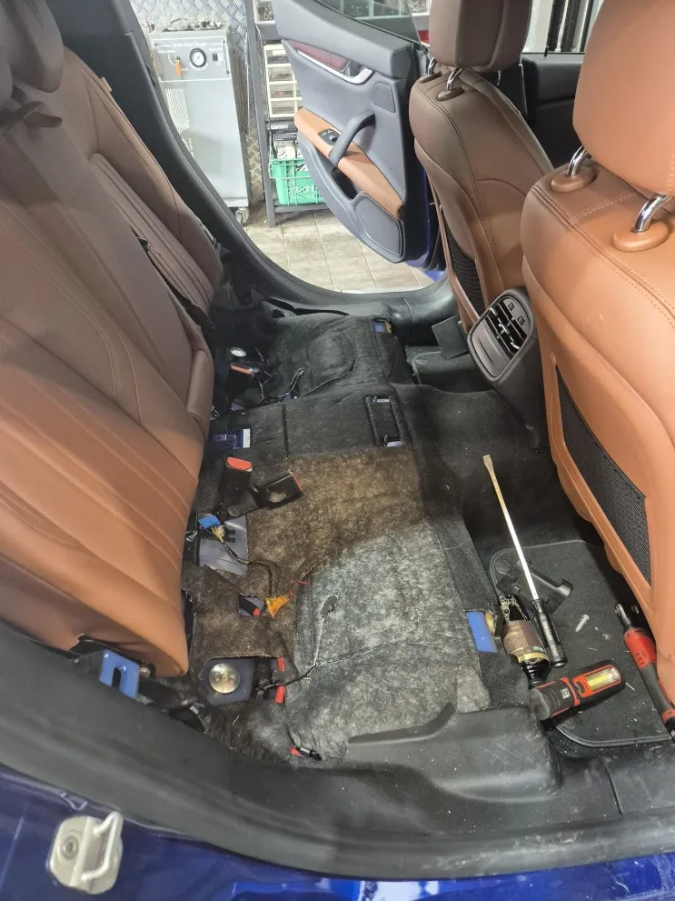
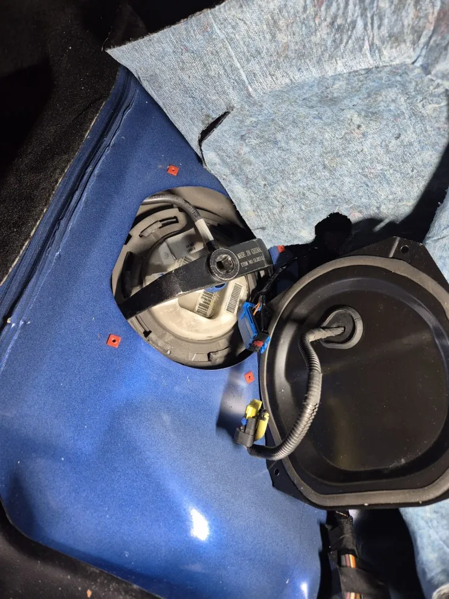
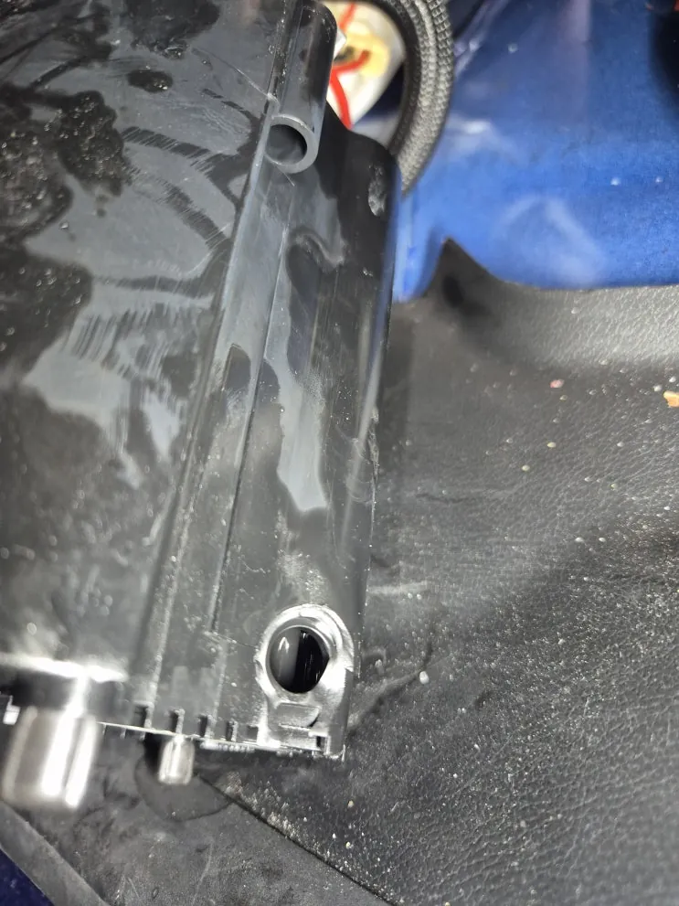
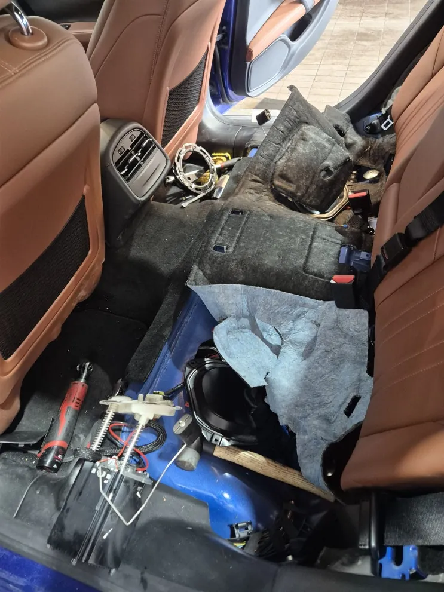
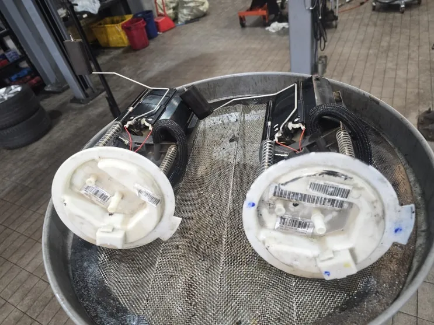
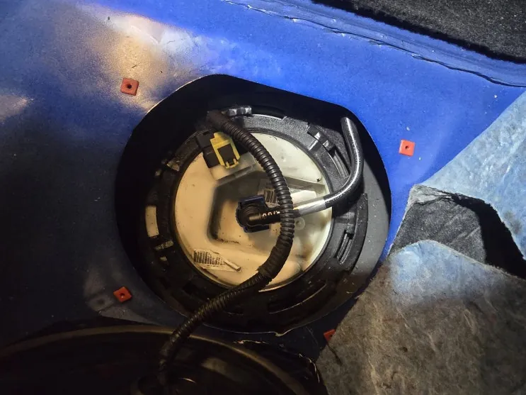
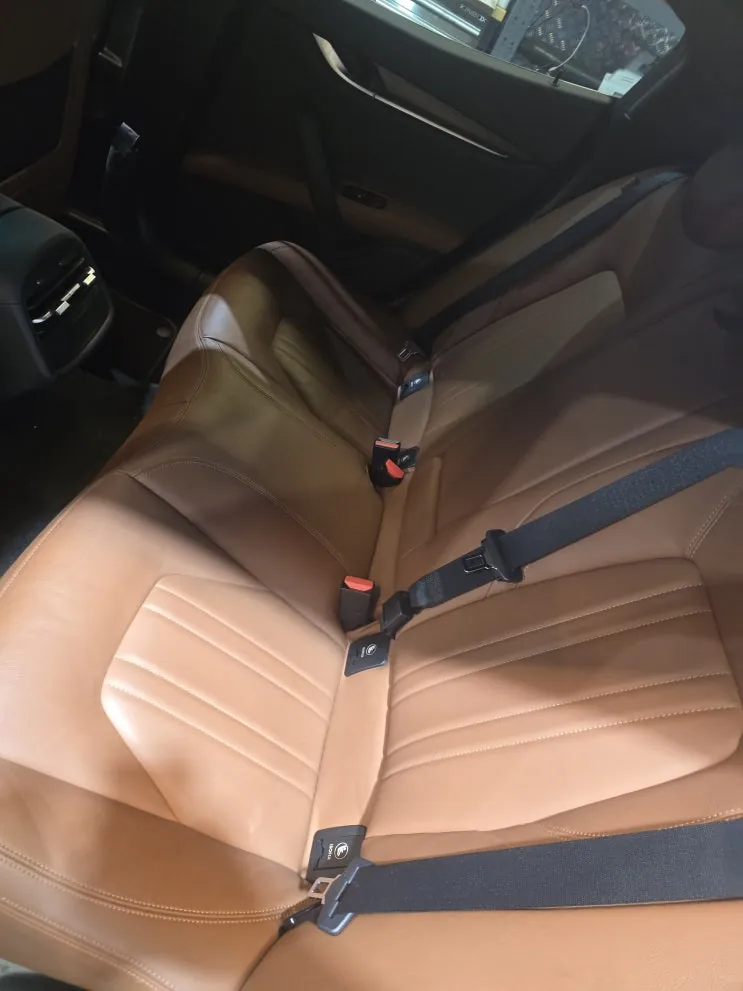

기블리 저압 연료펌프 파손 — 뒷좌석 아래 펌프 교환
At a glance한눈에 보기
- 차량
- 마세라티 기블리
- 증상
- 연료 공급 계통 이상 의심
- 진단
- M157 기블리의 뒷좌석 시트를 떼어 내고 확인한 저압 연료펌프가 파손되어 있어 교환했습니다. 시트 조립 후 시운전으로 증상이 다시 나타나지 않는 것을 확인하고 출고했습니다.
- 작업
- 뒷좌석 시트 탈거
- 저압 연료펌프 점검
- 저압 연료펌프 교환
- 시운전

저압 연료펌프가 하는 일
저압 연료펌프는 연료탱크의 연료를 엔진 쪽 고압펌프까지 보내는 부품입니다. 이 단계에서 연료가 모자라면 연료 압력이 떨어져 시동과 가속에 이상이 생길 수 있습니다.
일반적으로 시동이 평소보다 늦게 걸리거나 간헐적으로 안 걸리는 경우, 가속할 때 힘이 빠지거나 울컥거리는 경우, RPM이 불안정하거나 엔진 경고등이 켜지는 경우에 연료 공급 계통을 함께 확인합니다. 다만 이런 증상만으로 연료펌프 고장이라고 단정할 수는 없어, 관련 계통을 점검해 원인을 확인한 뒤 수리합니다.



점검 — 뒷좌석 아래에서 확인한 파손
기블리의 저압 연료펌프는 뒷좌석 시트 아래에 있어, 시트부터 떼어 내고 펌프를 꺼내 확인했고 파손이 보였습니다. 실내 작업이라 시트와 주변 내장재가 상하지 않도록 보호하면서 진행했습니다.
저압 펌프가 고장 나거나 파손되면 연료 압력이 떨어져 시동 지연이나 시동 불능, 출력 저하, 주행 중 시동 꺼짐으로 이어질 수 있습니다. 고압 계통에 무리가 갈 수도 있어 작은 증상이라도 일찍 점검하는 것이 좋습니다.


교환과 출고 점검
파손된 저압 연료펌프를 새 부품으로 교환하고, 시트를 다시 조립한 뒤 시운전으로 증상이 재발하지 않는 것을 확인했습니다. 교환 부품은 정품과 애프터마켓 부품 모두 가능합니다.
시동이 잘 안 걸리거나 가속이 둔해졌다면 연료 공급 계통도 점검 대상에 넣는 것이 좋습니다. 로건서비스는 경기도 파주에 있으며 전국 탁송 입고도 가능합니다. 비슷한 증상이 있다면 계기판 사진과 증상을 카톡으로 먼저 보내 주세요.


자주 묻는 질문
기블리 저압 연료펌프는 어디에 있나요?
뒷좌석 시트 아래에 있습니다. 그래서 점검과 교환 때 뒷좌석 시트를 먼저 떼어 냅니다.
시동이 늦게 걸리면 무조건 연료펌프 문제인가요?
아닙니다. 시동 지연과 출력 저하는 여러 원인으로 생길 수 있어 관련 계통을 점검해 원인을 확인한 뒤 수리합니다.
이 작업의 원문 기록: 네이버 블로그에서 보기
Consultation
마세라티 기블리, 비슷한 증상이 있나요?
증상 사진이나 경고등 화면을 카톡으로 먼저 보내 주시면 확인 후 안내해 드립니다. 전국 탁송 상담 가능.